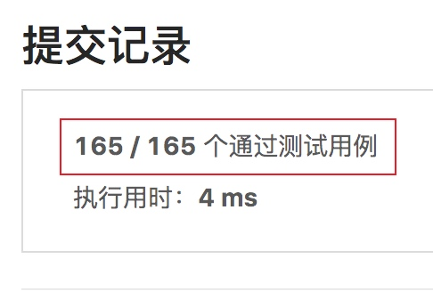
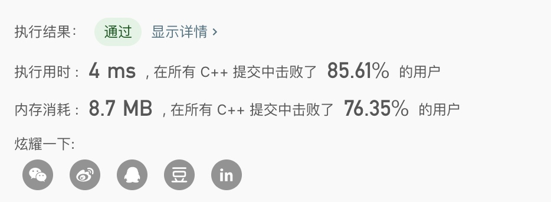

leetcode官方地址：https://leetcode-cn.com/problems/first-missing-positive/

从提交结果可以看到官方准备了165个测试用例，这就是说这道题可能边界条件比较多
问题描述
给定一个未排序的整数数组，找出其中没有出现的最小的正整数。
示例 1:
输入: [1,2,0]
输出: 3
示例 2:
输入: [3,4,-1,1]
输出: 2
示例 3:
输入: [7,8,9,11,12]
输出: 1
基本事实
题目中除了未排序的的数组外，并没有进行任何其它限制，所以可以得出
- 输入的数组可能为空，这时候直接返回第一个正数（就是1）即可
- 输入的数组内容可能全为负数，比如[-1, -2]，这个时候直接返回第一个正数（就是1）即可
- 输入的数组内容可能包含一个INT_MAX，比如[2147483647]，这个时候+1会导致int越界，应该提前进行判断，如果越界就直接返回1
- 输入的数组内的正数可能包含相同的正数，比如[1, 1, 2, 2]，所以相邻的正数比较时需要把相同的正数进行排除
然后对数组进行排序，相邻相减不为1的就是不连续的数了，排序的时候注意进行剪枝，以及不能使用额外的数组空间，以尽量满足O(n)，和常数级别的空间要求
算法实现
#define max(n1, n2) ((n1 > n2) ? n1 : n2)
class Solution {
public:
int firstMissingPositive(vector<int>& nums) {
if (nums.empty()) {
return 1;
}
int size = nums.size();
int maxNumber = nums[0];
for (int i = 0; i < size; i ++) { // 进行排序得到从小到达的数组顺序
maxNumber = max(nums[i], maxNumber);
for (int j = i; j < size; j ++) {
if (nums[i] > nums[j]) {
swap(nums[i], nums[j]); // 交换nums[i]和nums[j]的值
}
}
}
// 最大的数如果是0/负数，直接返回1
if (maxNumber <= 0) {
return 1;
}
for (int i = 0; i < size; i ++) { // 第一个正数不是1 直接返回1
if (nums[i] > 0) {
if (nums[i] == 1) {
break;
} else {
return 1;
}
}
}
for (int i = 1; i < size; i ++) { // 排好序的数组中找到第一个不连续的正数
// 如果是连续相同的正数，当前是无效循环，进行跳过
if (nums[i] == nums[i - 1]) {
continue;
}
if (nums[i] - nums[i - 1] != 1 && nums[i - 1] >= 0) {
return nums[i - 1] + 1;
}
}
// 如果都是连续的，就返回最大值 +1
if (maxNumber > INT_MAX - 1) { // 整数越界直接返回1
return 1;
} else {
return maxNumber + 1;
}
}
};

一些注意的点
难度：困难
获取INT_MAX常量
#include <limits.h>